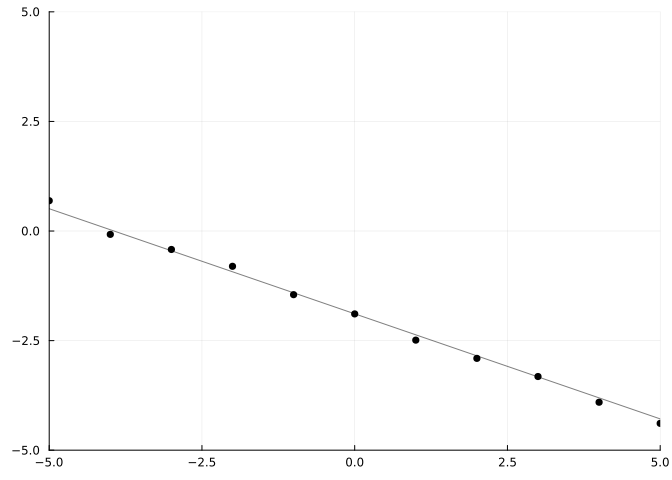
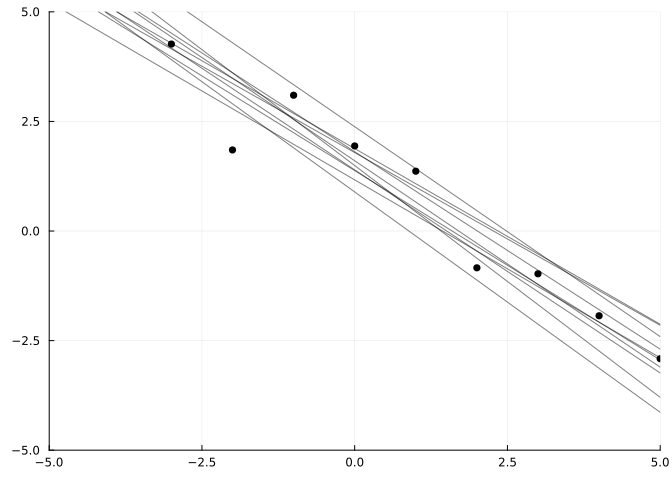

using Gen, Plots, Random; Random.seed!(0)Julia入門「アルゴリズムと数値計算を極める！」
Juliaのパッケージ
Writing a probabilistic model as a generative function
※制作中
Bayesian linear regression
平面上の点のデータセットがあり、それらの関係を説明するモデルを作成したい。
僕らはまず「このデータセットはどういう風に作られたんだろうか」と、モデルを推定する必要があります。
ここでは、平面（つまり２次元ユークリッド空間）上で \(x\) 軸上の点が \(y\) 軸上の点に移るような線形の関係（直線）であると推測しました。
以下は、与えられた点列xsに対して、適当な設定で作成した線形モデル（生成関数）です。 このモデルは、線を確率的に与えるという以上の意味はないです。
@gen function line_model(xs)
# 傾き(slope)と切片(intercept)は精々0から1, 2以上離れないくらいで生成
slope = {:slope} ~ normal(0, 1)
intercept = {:intercept} ~ normal(0, 2)
# モデルとする式を「y(x) = a x + b」とする。
y(x) = slope * x + intercept
# y(x)の値を 平均 y(x) 分散 0.1 とした正規分布から生成
for (i, x) = enumerate(xs)
# addrはiとのタプルで個別に与える
{(:y, i)} ~ normal(y(x), 0.1)
end
return y
end
;例えば、以下ようにの点列xsを与えます。
xs = [-5., -4., -3., -2., -1., 0., 1., 2., 3., 4., 5.];
y = line_model(xs)y (generic function with 1 method)line_modelのトレースを見たい場合、simulateによって表示することができます。
trace = Gen.simulate(line_model, (xs,))
;traceからyを得たい場合、以下のように得ることができます（trace[]でも可能）。
Gen.get_retval(trace)y (generic function with 1 method)関数の実行に用いた引数は以下のように取り出せます。
Gen.get_args(trace)([-5.0, -4.0, -3.0, -2.0, -1.0, 0.0, 1.0, 2.0, 3.0, 4.0, 5.0],)ランダムチョイスの値も取り出すことができます。trace[:slope]でも同じように取り出すことができます。
choices = Gen.get_choices(trace)
choices[(:y, 2)], choices[:slope](-0.07688651860452052, -0.4794303128671186)function render_trace(trace; show_data=true)
# traceからxsを取り出す
xs, = get_args(trace)
# traceから生成関数yを取り出す。1
y = get_retval(trace)
# 生成関数yのグラフの生成
test_xs = collect(range(-5, stop=5, length=1000))
test_y = y.(test_xs)
plt = plot(
test_xs, test_y,
color="black", alpha=0.5, label=nothing,
xlim=(minimum(xs), maximum(xs)),
ylim=(minimum(xs), maximum(xs))
)
# 生成時したデータセットを追加
if show_data
ys = [trace[(:y, i)] for i=1:length(xs)]
scatter!(xs, ys, c="black", label=nothing)
end
return plt
end
render_trace(trace)
function grid(renderer, traces)
Plots.plot(map(renderer, traces)...)
end
traces = [Gen.simulate(line_model, (xs,)) for _=1:12]
grid(render_trace, traces)波のモデル
※制作中
@gen function sine_model(xs::Vector{Float64})
# < your code here, for sampling a phase, period, and amplitude >
amplitude = {:amplitude} ~ gamma(1, 1)
period = {:period} ~ gamma(1, 1)
phase = {:phase} ~ uniform(0, 2π)
function y(x)
#return 1 # < Edit this line to compute y for a given x >
return amplitude * sin((2*π/period)*x + phase)
end
for (i, x) in enumerate(xs)
{(:y, i)} ~ normal(y(x), 0.1)
end
return y # We return the y function so it can be used for plotting, below.
end;
traces = [Gen.simulate(sine_model, (xs,)) for _=1:12];
grid(render_trace, traces)Posterior inference
※制作中
ここまではある種、前進的な推論をしました。 しかし、ここからは後退的に推論をしたいと思います。
\(y\) 座標のデータセットを用意し、そのデータを生成したプロセスについて推論したいと思います。 まず、次のようなデータセットを用意します。
xs = [-5., -4., -3., -2., -1., 0., 1., 2., 3., 4., 5.]
ys = [6.75003, 6.1568, 4.26414, 1.84894, 3.09686, 1.94026, 1.36411, -0.83959, -0.976, -1.93363, -2.91303];
scatter(
xs, ys,
color="black", label=nothing, title="Observed data (linear)",
xlabel="X", ylabel="Y"
)function do_inference(model, xs, ys, amount_of_computation)
# Create a choice map that maps model addresses (:y, i)
# to observed values ys[i]. We leave :slope and :intercept
# unconstrained, because we want them to be inferred.
observations = Gen.choicemap()
for (i, y) in enumerate(ys)
observations[(:y, i)] = y
end
# Call importance_resampling to obtain a likely trace consistent
# with our observations.
(trace, _) = Gen.importance_resampling(model, (xs,), observations, amount_of_computation);
return trace
end;
trace = do_inference(line_model, xs, ys, 100)
render_trace(trace)traces = [do_inference(line_model, xs, ys, 100) for _=1:10];
grid(render_trace, traces)function overlay(renderer, traces; same_data=true, args...)
fig = renderer(traces[1], show_data=true, args...)
xs, = get_args(traces[1])
xmin = minimum(xs)
xmax = maximum(xs)
for i=2:length(traces)
y = get_retval(traces[i])
test_xs = collect(range(-5, stop=5, length=1000))
fig = plot!(test_xs, map(y, test_xs), color="black", alpha=0.5, label=nothing,
xlim=(xmin, xmax), ylim=(xmin, xmax))
end
return fig
end;
traces = [do_inference(line_model, xs, ys, 100) for _=1:10];
overlay(render_trace, traces)
※制作中
sine_curve model
xs = [-5., -4., -3., -2., -1., 0., 1., 2., 3., 4., 5.]
ys_sine = [2.89, 2.22, -0.612, -0.522, -2.65, -0.133, 2.70, 2.77, 0.425, -2.11, -2.76];
scatter(xs, ys_sine, color="black", label=nothing)Predicting new data
constraints = Gen.choicemap()
constraints[:slope] = 0.
constraints[:intercept] = 0.
(trace, _) = Gen.generate(line_model, (xs,), constraints)
render_trace(trace)function predict_new_data(model, trace, new_xs::Vector{Float64}, param_addrs)
# Copy parameter values from the inferred trace (`trace`)
# into a fresh set of constraints.
constraints = Gen.choicemap()
for addr in param_addrs
constraints[addr] = trace[addr]
end
# Run the model with new x coordinates, and with parameters
# fixed to be the inferred values.
(new_trace, _) = Gen.generate(model, (new_xs,), constraints)
# Pull out the y-values and return them.
ys = [new_trace[(:y, i)] for i=1:length(new_xs)]
return ys
end;
predict_new_data(line_model, trace, [1., 2., 3.], [:slope, :intercept])3-element Vector{Float64}:
-0.0953169867456073
-0.012902515577909127
0.1663836598227303function infer_and_predict(model, xs, ys, new_xs, param_addrs, num_traces, amount_of_computation)
pred_ys = []
for i=1:num_traces
trace = do_inference(model, xs, ys, amount_of_computation)
push!(pred_ys, predict_new_data(model, trace, new_xs, param_addrs))
end
pred_ys
end;
pred_ys = infer_and_predict(line_model, xs, ys, [1., 2., 3.], [:slope, :intercept], 1, 1000)1-element Vector{Any}:
[0.7401782081256223, -0.08464311815010521, -1.24765482154271]function plot_predictions(xs, ys, new_xs, pred_ys; title="predictions")
fig = scatter(xs, ys, color="red", label="observed data", title=title)
for (i, pred_ys_single) in enumerate(pred_ys)
scatter!(new_xs, pred_ys_single, color="black", alpha=0.1, label=i == 1 ? "predictions" : nothing)
end
return fig
end;
scatter(xs, ys, color="red", label="observed data")new_xs = collect(range(-5, stop=10, length=100));
pred_ys = infer_and_predict(line_model, xs, ys, new_xs, [:slope, :intercept], 20, 1000)
plot_predictions(xs, ys, new_xs, pred_ys)
ys_noisy = [5.092, 4.781, 2.46815, 1.23047, 0.903318, 1.11819, 2.10808, 1.09198, 0.0203789, -2.05068, 2.66031];
pred_ys = infer_and_predict(line_model, xs, ys_noisy, new_xs, [:slope, :intercept], 20, 1000)
plot_predictions(xs, ys_noisy, new_xs, pred_ys)@gen function line_model_fancy(xs::Vector{Float64})
slope = ({:slope} ~ normal(0, 1))
intercept = ({:intercept} ~ normal(0, 2))
function y(x)
return slope * x + intercept
end
noise = ({:noise} ~ gamma(1, 1))
for (i, x) in enumerate(xs)
{(:y, i)} ~ normal(slope * x + intercept, noise)
end
return y
end;
pred_ys = infer_and_predict(line_model, xs, ys, new_xs, [:slope, :intercept], 20, 1000)
fixed_noise_plot = plot_predictions(xs, ys, new_xs, pred_ys; title="fixed noise")
pred_ys = infer_and_predict(line_model_fancy, xs, ys, new_xs, [:slope, :intercept, :noise], 20, 10000)
inferred_noise_plot = plot_predictions(xs, ys, new_xs, pred_ys; title="inferred noise")
plot(fixed_noise_plot, inferred_noise_plot)pred_ys = infer_and_predict(line_model, xs, ys_noisy, new_xs, [:slope, :intercept], 20, 1000)
fixed_noise_plot = plot_predictions(xs, ys_noisy, new_xs, pred_ys; title="fixed noise")
pred_ys = infer_and_predict(line_model_fancy, xs, ys_noisy, new_xs, [:slope, :intercept, :noise], 20, 10000)
inferred_noise_plot = plot_predictions(xs, ys_noisy, new_xs, pred_ys; title="inferred noise")
plot(fixed_noise_plot, inferred_noise_plot)Excersise
@gen function sine_model_fancy(xs::Vector{Float64})
# < your code here >
for (i, x) in enumerate(xs)
{(:y, i)} ~ normal(0., 0.1) # < edit this line >
end
return nothing
end;Calling other generative functions
@gen function foo()
{:y} ~ normal(0, 1)
end
@gen function bar()
{:x} ~ bernoulli(0.5)
# Call `foo` with a wildcard address.
# Its choices (:y) will appear directly
# within the trace of `bar`.
{*} ~ foo()
end
@gen function bar_using_namespace()
{:x} ~ bernoulli(0.5)
# Call `foo` with the address `:z`.
# The internal choice `:y` of `foo`
# will appear in our trace at the
# hierarchical address `:z => :y`.
{:z} ~ foo()
end;
trace = Gen.simulate(bar, ())
Gen.get_choices(trace)│
├── :y : 0.17844307899338174
│
└── :x : falsetrace = Gen.simulate(bar_using_namespace, ())
Gen.get_choices(trace)│
├── :x : true
│
└── :z
│
└── :y : 1.643956709981543trace[Pair(:z, :y)], trace[:z => :y](1.643956709981543, 1.643956709981543)@gen function baz()
{:a} ~ bar_using_namespace()
end
trace = simulate(baz, ())
trace[:a => :z => :y]0.12385163525827489trace[Pair(:a, Pair(:z, :y))]0.12385163525827489@gen function combined_model(xs::Vector{Float64})
if ({:is_line} ~ bernoulli(0.5))
# Call line_model_fancy on xs, and import
# its random choices directly into our trace.
return ({*} ~ line_model_fancy(xs))
else
# Call sine_model_fancy on xs, and import
# its random choices directly into our trace
return ({*} ~ sine_model_fancy(xs))
end
end;#=
traces = [Gen.simulate(combined_model, (xs,)) for _=1:12];
grid(render_trace, traces)
=##=
traces = [do_inference(combined_model, xs, ys, 10000) for _=1:10];
linear_dataset_plot = overlay(render_trace, traces)
traces = [do_inference(combined_model, xs, ys_sine, 10000) for _=1:10];
sine_dataset_plot = overlay(render_trace, traces)
Plots.plot(linear_dataset_plot, sine_dataset_plot)
=#